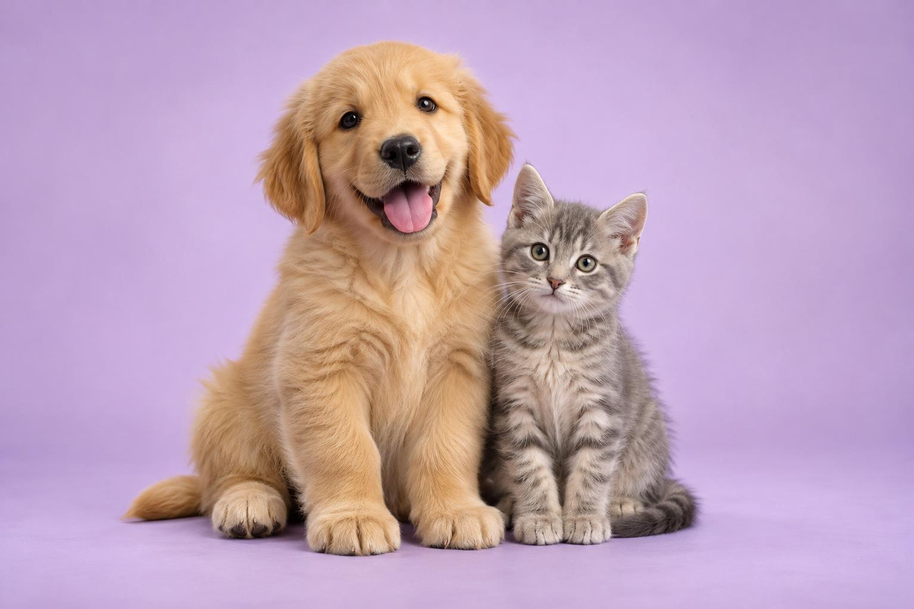

Pet food
Pick up food for your dog, cat or hamster at the centre.
JOHOR BAHRU, MALAYSIA
Meet your next little companion and find pet food, grooming and a cosy place for your pet to stay, all in JB.

MEET THE PETS
Explore the pets we sell and learn what each needs at home.
Puppies need time for play, training and socialisation. Consider your daily routine and how much time you can spend with a growing dog.
 Kittens
Kittens
Set up a quiet corner with a litter tray, a scratching post and a place to rest, and make time for daily play.
 Hamsters
Hamsters
Hamsters need room to explore, deep bedding for burrowing and a quiet spot to sleep during the day.
Pet photos are illustrative. Check current availability with the centre.
PET FOOD & CARE
Pick up food for your dog, cat or hamster at the centre.
Bring your pet in for grooming to keep their coat clean and tidy.
Arrange a stay for your pet while you’re travelling or away from home.
VISIT US
Johor Bahru, Johor, Malaysia